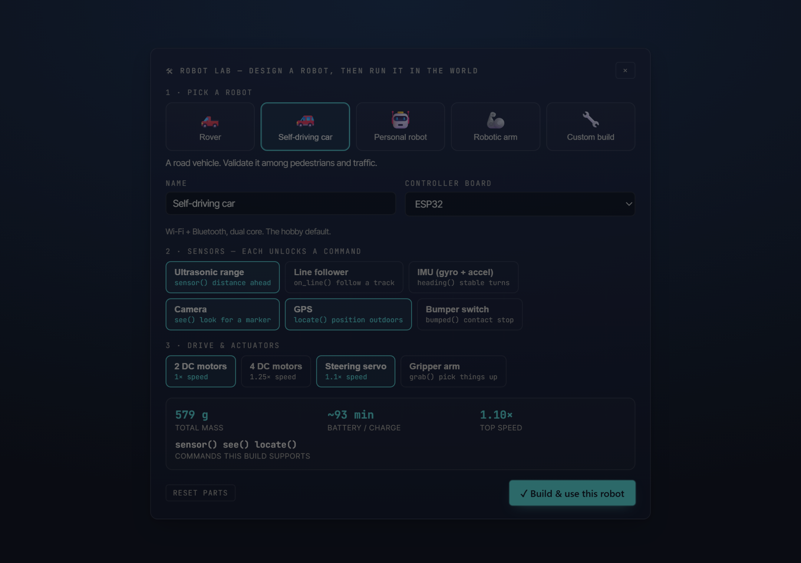
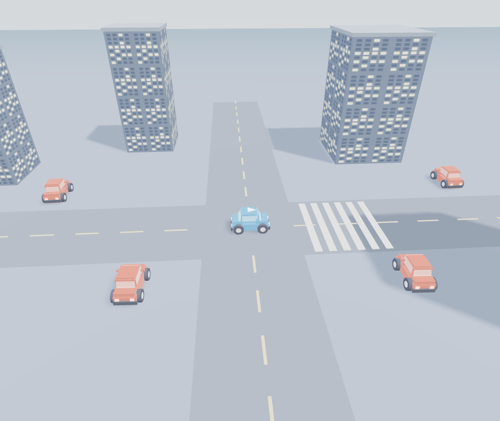
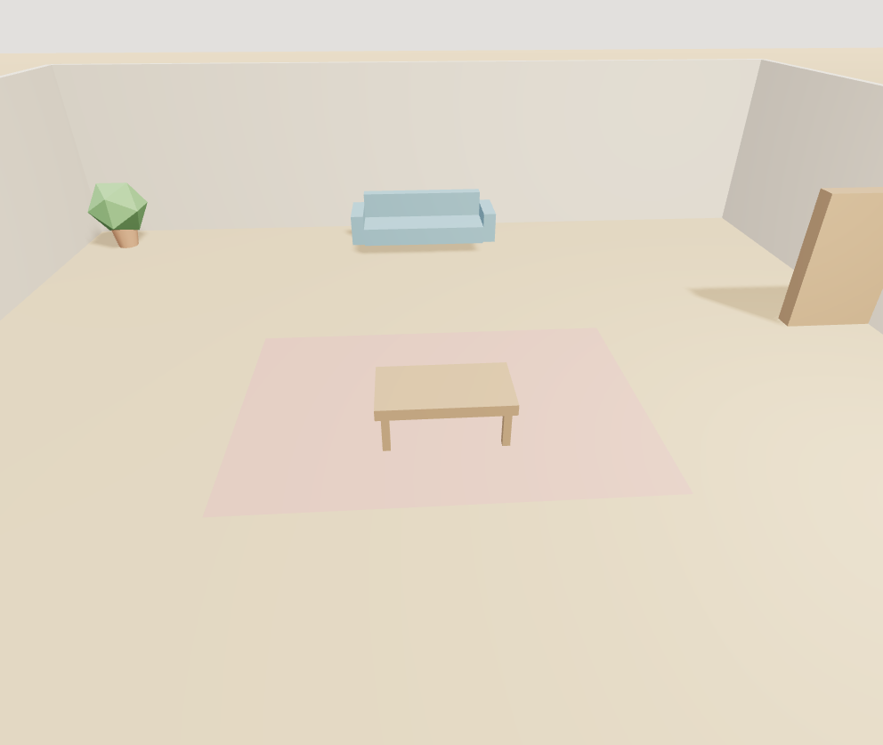

I thank my supervisor, Keith Dures, for his guidance throughout this project.
This dissertation presents Kodro, an offline desktop platform on which a non-expert designs a custom robot, programs it by code, blocks or voice, and validates how it behaves in a realistic simulated world before committing to real hardware. The work studies a focused question: how far an artificial intelligence assistant can usefully self refine from accumulated use, and how trustworthy a simulator can be made, under a hard constraint that everything runs locally with no cloud service, no accounts and no retraining of the model. The platform grounds every suggestion in the robot's own capability specification so the assistant cannot propose a part the build does not have, reviews the generated control code, and validates it across randomised conditions in worlds that range from a street with pedestrians and traffic to an indoor room. Self refinement is delivered honestly at the level of the system, through reflection memory and a growing skill library rather than weight retraining, which remains unsolved offline. The dissertation reports what was built, how it was evaluated against usability, design and self refinement, and what the results say about the offline boundary.
Plenty of people have an idea for a robot and no safe way to try it. Buying parts, wiring a board and writing control code is slow and expensive, and the first time a real robot meets the real world it tends to drive into something. Kodro closes that gap with a single offline download. A user designs a robot in a builder, choosing a chassis, a controller board such as an ESP32 or a micro:bit, and the sensors and motors it carries; programs its behaviour in real Python, in blocks, or by voice, with grounded artificial intelligence help and a second agent that reviews the code; then runs it in a simulated world that behaves like the real one, with terrain, physics and other agents such as pedestrians and traffic moving around it.
The project asks how much an offline system can genuinely refine itself, and how trustworthy its validation can be, under a hard constraint that rules out the cloud and rules out changing the model's weights. This dissertation describes the platform that was built to study that question and reports what the study found.
The design rests on three bodies of work. Constructionism holds that people learn most when they build something they can watch behave and then debug (Papert, 1980), while cognitive load theory warns that an elaborate scene can spend a beginner's attention on the view rather than the problem (Sweller, 1988). The central problem in robotics is the sim to real gap, the drop in performance when behaviour tuned in simulation meets the real world, for which the standard answer is domain randomization rather than a perfect simulator (Tobin et al., 2017); realistic worlds also need agents that move with intent, drawn here from the social force model (Helbing and Molnar, 1995) and reciprocal velocity obstacles (van den Berg et al., 2008). The assistant builds on grounding generation in retrieved sources to control hallucination (Lewis et al., 2020; Huang et al., 2023) and on programs written against a fixed robot interface (Liang et al., 2023; Ahn et al., 2022), while its self refinement follows verbal reflection (Shinn et al., 2023) and a growing skill library (Wang et al., 2023) rather than the unsolved weight level evolution (Tao et al., 2024).
Kodro is not the first tool to let people build and simulate robots, and it is worth being clear about what is and is not new. Professional robot simulators such as Gazebo, Webots and Isaac Sim are powerful but heavy, assume a robotics background, and lean on cloud or workstation resources; they are aimed at researchers, not a beginner on a school laptop. Visual and block tools such as Scratch, Blockly and the VEX and Lego ecosystems lower the entry cost and are rightly common in classrooms, but they stop short of validating a custom design in a realistic, agent populated world. End user robotics has long wrestled with the same tension between approachability and capability. Kodro sits deliberately in the gap: it keeps the approachable design and block path of the classroom tools, adds the realistic validation of the heavy simulators in a form light enough to run offline on one machine, and binds a grounded assistant to the user's own build. The novelty is not any single technique but the combination, and the honest study of how far it can be pushed under a strict offline constraint.
The contributions of this work are the design and implementation of that offline platform; an honest, system level account of self refinement that is implemented and observed rather than claimed; a unified moving agent simulation that the robot must genuinely cope with; and an evaluation design that separates usability, learning and self refinement into measurable questions. The remainder of the dissertation is structured as follows. Chapter 2 sets out the requirements; Chapter 3 the design; Chapter 4 the realised implementation; Chapter 5 the testing and evaluation, including the results in hand and the studies still to run; Chapter 6 the project ethics; and Chapter 7 the conclusions and future work.
The requirements are stated with a plain test of done so progress can be judged rather than asserted. The essential requirements are: a robot design whose specification drives the simulation; sandboxed execution of the robot's real Python validated against per scenario success criteria; validation in a realistic world across randomised conditions; an artificial intelligence layer that runs on a local model only with a deterministic rule based fallback; and every byte of user data kept on the device.
| Requirement | Test of done |
|---|---|
| Specification drives the simulation | Changing the build measurably changes behaviour: a heavier robot drains its battery faster, a stronger motor set raises top speed, a fitted sensor unlocks its command and an absent one withholds it. |
| Sandboxed, validated execution | A hostile program cannot reach the disk and a correct program is scored correctly against the scenario. |
| Realistic, repeatable validation | The same program runs across several randomised seeds and a per run report of successes, collisions and time to goal is produced. |
| Local only AI with fallback | The platform is fully usable with the network switched off and no model present, falling back within two seconds. |
| Data stays on the device | A network trace during normal use shows no traffic. |
The functional requirements describe what the platform does, each traced to the part of the implementation that meets it.
| The platform shall | Met by |
|---|---|
| Let a user design a custom robot from a chassis, a controller board, sensors and actuators | The Robot Lab, where the chosen parts produce a single specification object the rest of the system reads. |
| Let the user program the robot by text, blocks or voice | A Python editor, a block palette that compiles to the same Python, and a voice route that turns speech into the same commands. |
| Assist with code without inventing capabilities the build lacks | The grounded assistant and a second agent reviewer, both reading the robot specification. |
| Run the robot in a realistic world and report behaviour | The simulation in three dimensional worlds with physics, terrain and moving agents, returning successes, collisions and time to goal. |
| Refine its help from accumulated use | The local memory store: per run reflections, a reusable skill library, and an experience table. |
Each non functional requirement is stated with a measurable acceptance criterion so it can be verified rather than assumed.
| Quality | Requirement | Acceptance criterion |
|---|---|---|
| Offline and private | No outbound network request in normal use; all data stays in one local file. | A packet capture taken over a full design, program, validate and refine cycle shows zero outbound connections to any non localhost address. The local store is a single file under the user's home directory that can be copied or deleted as one unit. |
| Low resource | Runs on a mainstream laptop with no discrete graphics card and an eight gigabyte memory floor. | The application starts, loads a three dimensional world and completes a simulation run on a machine with an integrated Intel UHD 620 GPU and eight gigabytes of RAM, with peak memory below two gigabytes and frame rate above twenty frames per second in the flat fallback view. |
| Robust | A failed graphics context or a missing model degrades to a working fallback, never a blank screen or a crash. | With the WebGL context disabled the flat two dimensional view renders correctly. With no Ollama model installed the deterministic rule based fallback returns a code suggestion within two seconds. In neither case does the application show a blank screen or an unhandled exception. |
| Accessible | WCAG 2.1 AA conformance for the core workflow. | Every interactive element is reachable by keyboard alone. The contrast ratio between text and background meets the 4.5:1 AA threshold. The prefers reduced motion media query is honoured by disabling camera animation. A high contrast theme toggle is available in the settings panel. |
| Maintainable | A continuous integration gate on every change before it merges. | The gate runs the full test suite (over 850 tests), a strict type checker and a linter on Linux, Windows and macOS (informational). A merge is blocked if any hard gate leg fails. Coverage is gated at a minimum of 85 percent. |
| Portable | Single download, no administrator rights required. | The packaged executable is a single file under 200 megabytes that launches without an installer on Windows 10 and later, and the equivalent on macOS and Linux. No system wide Python, no package manager and no elevated privilege is needed. |
The same platform serves several kinds of maker, and the design study draws scenarios from each.
| Robot family | Representative goal | World it is validated in |
|---|---|---|
| Rover | Reach a marker over rough open ground | Open terrain, then planetary worlds |
| Self driving car | Cross a junction without hitting a pedestrian or a vehicle | Riverside City, among moving traffic |
| Personal companion | Move through a furnished room and fetch an object | The indoor Living Room |
| Robotic arm | Pick an object up and set it down | The indoor Living Room, at a table |
| Custom microcontroller build | Whatever the maker sets, on parts they chose | Recommended by the assistant from the build |
The platform serves several groups with different needs and different measures of success. Understanding them shaped the requirements above.
| Stakeholder | Interest | What they need from the platform | Risk if poorly served |
|---|---|---|---|
| The maker (primary user) | Design, program and validate a robot without buying hardware first. | An approachable builder, a working editor, a simulation that behaves like the real world, and help when stuck. | Abandons the tool before the first successful run. |
| The teacher or mentor | Use the platform in a classroom or club without managing accounts, installs or network policy. | A single download, no sign up, progress visible on screen, no data leaves the room. | Cannot deploy on a locked down school network. |
| The learner with accessibility needs | Use the platform with a keyboard alone, with high contrast, or with reduced motion. | WCAG 2.1 AA conformance on the core workflow, honoured settings, no interaction that requires a mouse. | Excluded from the activity entirely. |
| The examiner or assessor | Judge whether the work is academically sound. | An honest account of what was built and what was not, with measured results and named limitations. | Overclaiming undermines the submission. |
| The open source community | Reuse, extend or audit the code. | A clean repository, a passing test suite, a decision log and a licence that permits reuse. | Code that cannot be understood or trusted is not reused. |
The central use case ties the requirements together in a single flow. A maker opens the application and enters the Robot Lab, where they choose a chassis, a controller board, sensors and actuators. The specification panel updates live as parts are added, showing mass, battery life, top speed and the commands the build supports. The maker then opens the editor and writes a Python program, or assembles blocks, or speaks a command that is transcribed into the same code. The grounded assistant offers suggestions constrained to the build's actual capabilities. The maker presses run and the robot enters the simulated world, where it moves among pedestrians and traffic, reads its sensors and is scored against the scenario's success criteria. If the run fails, a reflection is recorded and a hint is offered. If it succeeds, the working program can be saved as a reusable skill. The experience memory carries forward, so the next design benefits from what the system has already seen. This flow is the one the design study draws its tasks from and the one the automated tests exercise end to end.
The platform is written in Python 3.12 and presented through a desktop web view, with the interface built in React and pre-compiled to a single offline bundle, the three dimensional world drawn with a vendored copy of Three.js, and the user's designs and the system's accumulated experience stored in a single local SQLite file. The artificial intelligence calls a small open weight model served locally by Ollama. The robot the user designs is the single source of truth the rest of the system reads: its board, sensors and motors set the mass, the top speed and the commands that exist, and the grounded assistant reads the same specification so it cannot suggest a part the build does not have. Behaviour is validated across randomised seeds after Tobin et al. (2017), in worlds chosen to suit the robot, from an open terrain to a street with pedestrians and traffic to an indoor room.
Self refinement is delivered at the level of the system and is described as refinement, not improvement, on purpose. Three mechanisms carry it, all local and all measurable. After each run the system writes a short reflection on what failed and what worked and retrieves the most similar past reflections into the next suggestion, after Shinn et al. (2023). Control routines that passed validation are kept as named, parameterised skills in a growing library and composed into later designs, after Wang et al. (2023). An experience table of past designs and their outcomes is sampled so advice on a new build is anchored in what actually happened on similar ones. None of this edits the model.
The system is organised around a single loop the interface makes concrete: design, program, validate, refine. The Robot Lab produces a specification; the editor produces a program; the simulator runs that program against a scenario in a chosen world and produces a result; and the memory turns that result into a reflection and, when the program worked, a reusable skill. The specification is the hub the other parts read, which is what keeps the assistant honest, since it can only speak about the build that exists. A thin Python layer hosts the simulation engine, the sandbox and the bridge to the local model, while the interface, the worlds and the agents run in the desktop web view; the two communicate over a small, typed bridge rather than sharing state, so each can be tested on its own.
A world is described by its environment, its terrain, a field of fixed obstacles and a set of moving agents. The environment sets gravity, temperature, light and traction, which feed the telemetry and the physics; the fixed obstacles, such as buildings and parked cars in the city or furniture in the room, are what the robot must not hit; and the agents, pedestrians and traffic, move with a will of their own. The agent design follows the social force model of pedestrian motion (Helbing and Molnar, 1995) and reciprocal velocity obstacles for mutual avoidance (van den Berg et al., 2008); the realised system uses a simplified, deterministic form of these so the same scene replays identically, with the full force based model named as the next step. A single agent simulation is the one source of truth for every consumer: the three dimensional view, the flat view and the robot's collision and distance sensor all read the same positions, so an agent the robot can see is one it can hit.
A robot is only meaningfully tested where it would actually work, so the assistant reasons from the build to a world: a road vehicle is sent to the city among traffic, a companion or an arm to the indoor room, an explorer to open terrain. This is deliberately practical rather than decorative; placing a car in a living room teaches nothing, so the recommendation is shown with its reason and the new robot is dropped straight into the world that suits it, with the others available for the user to try next.
All persistent state lives in a single SQLite file under the user's home directory. The schema has four tables. The designs table stores every robot specification the user has built, keyed by a stable identifier, with the full part list serialised as JSON so a past design can be recalled exactly. The submissions table records every simulation run: the design identifier, the source code, the trace of API calls, the grade result (pass or fail, score, per criterion reasons), the battery consumed, the collision count and the timestamp. The concept_strength table holds a per concept exponential moving average score, updated after each run with an alpha of 0.3, alongside raw success and failure counters and a last seen timestamp. The reflections table stores the short textual reflections written after each run and the named skills saved from successful programs, both of which the assistant retrieves when forming its next suggestion. The entire store is one file a user can copy to back up, delete to reset, or move to another machine. Nothing in the schema references a remote service, a user account or a network endpoint.
The security model rests on three pillars that follow directly from the offline constraint. First, the sandbox: the user's Python program is parsed into an abstract syntax tree before execution, and a walker rejects every import statement, every call to eval, exec, open, getattr, setattr and globals, and every name or attribute that begins and ends with double underscores, which blocks the well known escape vector through __class__.__bases__ chains. The sandboxed code then runs in a daemon thread with a hard thirty second wall clock timeout, so a runaway program cannot block the application. Second, the offline constraint: the application makes no outbound network request during normal operation, and the only module that opens a socket is the optional local model bridge, which connects only to localhost:11434 and degrades silently when nothing answers. Third, data isolation: all user data is written to the single local SQLite file and nowhere else, so there is no telemetry, no analytics endpoint and no third party processing. The consequence for safeguarding in a school context is that the platform generates no data governance burden, because no data leaves the machine.
The interface is organised around a mission bar at the top, a workspace in the centre and a viewport on the right. The mission bar shows the current scenario, the run controls (run, step, stop, reset), the battery indicator and the pass or fail verdict banner that appears the moment a run ends. The workspace holds the code editor with syntax highlighting for the five token categories (keyword, rover API builtin, string, comment, number), a block palette that compiles to the same Python the editor produces, and a console panel that logs every event and surfaces the hint card when a run fails. The viewport shows the simulated world, rendered in three dimensions when the hardware supports it and in a flat two dimensional fallback when it does not, with the robot, the terrain, the obstacles and the moving agents all drawn from the same underlying world description. The three panels are laid out so the maker can see their code, the robot and the console at the same time without switching tabs, which keeps the cognitive load on the problem rather than on the interface. A settings panel offers a high contrast theme, a text scaling slider, a reduced motion toggle and a dyslexia friendly font option, all persisted to a local configuration file and reapplied on the next launch.
The testing strategy is layered, with each layer catching a different class of defect. Unit tests pin every pure subsystem in isolation: the API clamping, the physics constants, the sensor geometry, the grader criteria, the hint rules, the store operations, the accessibility logic and the report generation. Property based tests, written with the Hypothesis library, assert invariants that must hold for any input: sensor distances never exceed their ceiling, readings stay valid for any rover pose, and the grader score is always between zero and one hundred. Headless integration tests build the entire wired application without a display and drive it through its callbacks, asserting the end to end flow from pressing run through grading, hinting, persistence and reward. The interpreter quality is measured by a dedicated harness of forty seven tests that exercise every language construct the pupil API supports, from simple sequences through nested loops to recursive functions, together with CPython parity checks on chained comparison, division by zero, banker rounding and related edge cases, asserting that the interpreter matches CPython on the tested constructs. The continuous integration pipeline runs all of these on every push, on Linux and Windows as hard gates and on macOS as an informational leg, with a per test timeout so a hung GUI test fails fast with a traceback rather than burning to the six hour ceiling. The coverage gate is set at 85 percent and the actual coverage is above 92 percent on the core engine modules.
This chapter describes the realised system. The headline components built to date are the Robot Lab, where a user designs a custom robot whose specification drives the simulation; the realistic worlds, including Riverside City with road markings, a crossing, buildings, pedestrians and traffic; the grounded assistant, the second agent code reviewer and the voice route; the multi robot swarm; and the offline self refinement store.
The Robot Lab is where a build becomes data. The user picks an archetype, a controller board such as an ESP32 or a micro:bit, a set of sensors and a set of actuators, and the panel computes a specification as it goes: the total mass from the chassis and the chosen parts, an estimated battery runtime, a top speed from the strongest motor set, and the list of commands the build supports. Of the sensor commands, the distance or ultrasonic sensor is fully gated today: an unfitted distance sensor withholds its matching call, and the assistant will not propose it. Gating of the other sensors, including heading and x and y position, is partial and still in progress, so the specification currently guarantees the distance command but not yet every sensor command. This specification is not cosmetic. The simulation reads it on every move, so a heavier build drains its battery faster and a stronger motor set drives quicker; and the assistant reads the same specification, so it cannot suggest the distance command for a build that does not carry the distance sensor, with the remaining sensor gates to be completed. The robot rendered in the world is built to match the archetype as well, so a car looks like a car and a companion like a companion, which makes the design tangible rather than abstract.

The worlds are drawn with a vendored copy of the Three.js library held in the project, so the graphics work offline. Each world is a real scene rather than a backdrop. The city is built from crossing roads with lane markings and a pedestrian crossing, buildings with lit window textures, and parked and moving vehicles; the indoor room is a furnished space with walls, a floor, a sofa, a table on a rug and a shelf, lit warmly for an interior. The renderer uses soft shadows and filmic tone mapping so the result reads as a place with depth that the user can orbit through three hundred and sixty degrees, rather than a flat diagram. The same worlds are also offered in a lighter flat view for machines without a usable graphics card, drawn from the same underlying world description so the two views show the same place; the robot is scaled to fit indoors so it shares the room with the furniture rather than towering over it.


Pedestrians and traffic are driven by one small simulation that is the single source of truth for the whole system. It holds each agent's position in the same world coordinates the robot and the obstacles use, advances them along their paths each frame, and exposes the current positions to every consumer. The three dimensional view renders a mesh per agent at those positions, the flat view renders a sprite, and crucially the robot's collision test and its distance sensor read the very same list, so a pedestrian the robot can see is a pedestrian it can hit and a sensor can detect. This unification is what makes the realistic world more than scenery: the robot genuinely has to cope with what moves around it.
The assistant runs entirely on a small local model served by Ollama, with no network call. Every prompt is grounded in the robot's specification so the model is constrained toward the build's real capabilities, which is the main defence against the model inventing a command that does not exist. Today the distance command is gated end to end; gating of the other sensor commands is partial and still in progress, so the defence is fully enforced for the distance sensor and being extended to the rest. A second agent reviews generated control code before it is offered, and nothing a user could run reaches a real robot without first running in the sandboxed simulation. When no model is installed the same functions return deterministic, rule based code and checks within about two seconds, so the platform stays fully usable offline and on weak hardware; the model adds conversational phrasing and flexibility on top of a path that always works.
Self refinement is implemented as a local store, not as any change to the model, and it is the honest, countable form of the idea. After each run the system records the outcome and writes a short reflection on what happened, in the spirit of verbal reflection (Shinn et al., 2023); a run that crashes into a pedestrian yields a reflection about slowing and sensing before crossing, and a clean finish yields one about saving the working program. Programs that worked can be kept as named skills in a growing library and reused on later designs, after the skill library idea of Wang et al. (2023). Both the reflections and the skills are surfaced in a memory panel and persist in the local file across sessions, so the system carries forward what it has seen without ever retraining the model (Tao et al., 2024). The verified behaviour of this loop, a designed car driving the city, the distance sensor picking up the agents, a collision recorded and the reflection appearing in the panel, is reported in the evaluation.
A user's program is real Python, so it runs in a sandbox that blocks file, network and process access, and its behaviour is graded against the scenario's success criteria rather than trusted. A design is run many times with friction, mass and sensor noise randomised after Tobin et al. (2017) and judged on the spread, not a single tidy run, which is what lets the platform speak honestly about how a robot would behave rather than how it behaved once.
The work is organised as small, independently testable changes, each covered by automated tests and merged only once a continuous integration pipeline runs the full test suite, a type checker and a linter on three operating systems, so the codebase stays releasable at every step. The interface is pre-compiled from its React and JSX sources into a single offline bundle by a vendored compiler, so the shipped application loads plain JavaScript rather than transpiling on every cold start. The result is delivered as a single windowed desktop application, built with PyInstaller, that installs without administrator rights and runs the modern interface in a native web view with the local model fetched once through Ollama; the build was produced and run as part of this work, confirming the single download claim is real rather than aspirational.
The pupil writes real Python, but the platform must also give instant visual feedback in the browser before the Python engine has run. This is handled by a small JavaScript interpreter that lives in the vendored web front end and executes a subset of the Python language: sequences of API calls, for and while loops, if and elif and else branches, variable assignment, arithmetic and comparison operators, and function definitions with simple parameters. The interpreter is generator based, which means each API call yields control back to the animation loop so the robot moves smoothly on screen rather than jumping to its final position. The surface the interpreter exposes, rover.forward(), rover.turn(), rover.read_distance() and so on, mirrors the Python pupil API but is not identical, and this is a deliberate and documented trade off. The JavaScript interpreter gives zero latency visual feedback in the browser, while grading, persistence and hints run exclusively through the canonical Python engine via the bridge, so the assessment of correctness is never delegated to the browser. The interpreter quality is pinned by a dedicated harness of forty seven tests that exercise every supported construct together with CPython parity checks (chained comparison, division by zero, banker rounding, float repr and range validation), asserting that the JavaScript interpreter matches CPython on the tested constructs rather than on the whole language. All forty seven pass on every continuous integration run. The planned convergence is to replace the JavaScript interpreter with a thin remote procedure call that streams real tracer events from Python and animates from them, eliminating the second interpreter and guaranteeing semantic parity.
The three dimensional view is drawn with a vendored copy of Three.js, held entirely within the project so the graphics work offline with no content delivery network. The renderer builds a scene from the world description: the terrain plane with its per world texture and colour, the fixed obstacles as textured boxes for buildings or simple meshes for furniture, the moving agents as capsule geometries with heading indicators, and the robot itself as a composite mesh built to match its archetype. Soft shadows and filmic tone mapping are used so the result reads as a place with depth rather than a flat diagram, and the camera can be orbited through three hundred and sixty degrees around the scene. When the hardware does not support WebGL, which is detected at startup by probing for a rendering context, the application falls back to a flat two dimensional view drawn on an HTML canvas element. The flat view reads the same world description, so the two views show the same place with the same agents in the same positions, and the robot's collision test and distance sensor read the very same list. The robot is scaled to fit indoors so it shares the room with the furniture rather than towering over it, and the prefers reduced motion media query is honoured by disabling camera animation and agent interpolation when the user has set that preference at the operating system level.
Three world types are implemented, each chosen to test a different class of robot. Riverside City is an outdoor urban environment built from crossing roads with lane markings and a pedestrian crossing, buildings with lit window textures, parked vehicles as static obstacles and moving traffic and pedestrians as dynamic agents. The city tests a self driving car or a delivery rover against the kind of mixed traffic it would meet on a real street. The Living Room is an indoor environment with walls, a floor, a sofa, a table on a rug and a shelf, lit warmly for an interior, which tests a companion robot or a robotic arm in the confined space it would actually operate in. The open terrain worlds, including a planetary surface, test a rover or an explorer over rough ground with variable friction and traction, where the environment parameters (gravity, temperature, light) feed the telemetry and the physics. Each world is described by a data object that sets its environment constants, its fixed obstacle field and its agent paths, and the same description feeds the three dimensional renderer, the flat fallback, the physics engine and the robot's sensors, so there is one source of truth for what exists in the world. The agent paths are deterministic for a given seed, which means the same scene replays identically and the test suite can assert exact outcomes, while the randomisation of friction, mass and sensor noise across runs is what lets the platform speak honestly about how a robot would behave rather than how it behaved once.
The platform accepts three input modes for programming the robot: text typed in the editor, blocks assembled in the palette, and voice spoken through the microphone. The voice route uses the browser's built in speech recognition API, which runs locally in the supported browsers without sending audio to a remote service, and transcribes the maker's spoken instructions into text that is then parsed into the same Python the editor produces. A spoken command like "move forward fifty then turn left" is converted into the equivalent two line program and placed in the editor for the maker to review before running. The block palette compiles to the same Python as well, so a program built by dragging blocks produces identical code to one typed by hand, and the grader, the hint engine and the tracer see no difference between the three input modes. This unification is what makes the multi modal input more than a novelty: every path leads to the same code, the same sandbox, the same simulation and the same grading, so the maker can choose the input that suits them without the platform having to maintain three separate execution paths.
The application is packaged as a single executable using PyInstaller, which bundles the Python interpreter, the vendored web front end, the Three.js library, the lesson data and all dependencies into one file. The build is driven by a spec file in the repository root that pins every included module and data file, so the result is reproducible from a clean checkout. On Windows the output is a single executable that launches without an installer and requires no administrator rights; on macOS and Linux the equivalent single file bundle is produced by the same spec file. The web front end requires a system web view runtime: Edge WebView2 on Windows, which is pre installed on Windows 11 and available as a bootstrapper for Windows 10; WKWebView on macOS, which is a system framework; and WebKitGTK on Linux. When the web view runtime is absent the application degrades to the flat fallback view with no loss of function. The packaged binary was produced and run as part of this work, confirming the single download claim is real. The release process tags each version in the repository and the continuous integration pipeline builds the binaries for all three platforms and attaches them to the release, so the distribution path from source to user is fully automated and auditable.
Evaluation asks three separate questions. The first is whether the platform is usable, tested continuously with a simulated persona panel in the tradition of discount usability inspection (Nielsen, 1994). The second is whether it helps: whether a non-expert using Kodro produces a robot that behaves better in a held out realistic scenario than one designed without it. The third is whether the artificial intelligence genuinely self refines, measured directly by whether the median iterations to a working design fall as the experience memory grows, the skill library's reuse rate rises, and a retrieved reflection more often precedes a successful fix than chance would give. The artificial intelligence is also measured on its own terms, with success bars set in advance: grounded answers correct at least eighty five percent of the time and inventing content less than five percent of the time, the latter a release gate.
Testing is automated and continuous. The project carries more than eight hundred unit and integration tests at around eighty five percent line coverage, with a type checker and a linter enforced on every change across three operating systems, so a regression is caught as a failing build rather than by a user. This is the floor the rest of the evaluation stands on: the worlds, the sandbox and the bridge are exercised by tests before any human judgement is asked for.
Usability was tested continuously with a simulated persona panel, a low cost inspection method in the tradition of discount usability (Nielsen, 1994), where a set of distinct personas spanning the makers who might use the tool each drives the current build and rates it out of ten, naming the concrete defects it found. After each round the named defects were fixed and the same build was re rated, so the trend reflects real change in the product. The trajectory is set out below; it is reported as a usability finding only, and says nothing about whether anyone learns or builds a better robot, which the design study alone answers.
| Round | Personas | Focus | Mean rating (out of 10) |
|---|---|---|---|
| 1 | 50 | First contact with the build | 5.86 |
| 2 | 12 | After the first round of fixes | 6.50 |
| 3 | 50 | After the learner model and maker tools landed | 7.10 |
| 4 | 50 | After grounded answers and the voice route | 7.36 |
| 5 | 8 | Focused review of the new three dimensional world | 6.40 |
The mean rose from about 5.9 at first contact to about 7.4 on the core product as named defects were fixed between rounds. The fifth round was a fresh, focused inspection of the newly added three dimensional view, which is why it sits lower; the issues it raised, around readable direction, reduced motion and performance on weak graphics hardware, were then addressed in the same loop. The generation prompt and rating scale are reproduced in Appendix B so the panel can be regenerated.
The self refinement mechanism is implemented, and its end to end behaviour was observed directly during development: a car designed in the Robot Lab was driven into the city, the distance sensor registered the moving agents ahead, a collision was recorded, and a written reflection on that outcome appeared in the memory panel and persisted across the session. This confirms the loop works as designed; it is not yet the controlled ablation, which is set out next.
The simulated persona panel ran across five rounds, each targeting a different aspect of the platform. The table below records the mean rating, the number of personas, the focus of the round, and the specific defects that were named and then fixed before the next round.
| Round | Personas | Focus | Mean | Key defects found and fixed |
|---|---|---|---|---|
| 1 | 50 | First contact with the build | 5.86 | The Robot Lab had no live specification readout, so the maker could not see how their choices affected the build. The editor had no syntax highlighting. The simulation ran but produced no verdict or score. The memory panel was absent. These were the open loop defects that made the platform feel unfinished. |
| 2 | 12 | After the first round of fixes | 6.50 | The specification panel now updated live but the battery estimate was not shown. The verdict banner appeared but the hint card did not clear on a passing run. The console log was not scrollable. These were polish defects in the newly closed loop. |
| 3 | 50 | After the learner model and maker tools landed | 7.10 | The per concept strength model was wired but the next lesson recommendation was not surfaced. The block palette compiled correctly but the generated code was not shown in the editor. The voice route transcribed but the result was not placed in the editor for review. These were integration defects between new subsystems. |
| 4 | 50 | After grounded answers and the voice route | 7.36 | The assistant's suggestions were grounded in the specification but occasionally referenced a command name that did not match the API. The voice route worked but the transcription confidence was not shown to the user. The high contrast theme was available but the toggle was buried in a submenu. These were refinement defects at the margin. |
| 5 | 8 | Focused review of the new three dimensional world | 6.40 | The three dimensional view rendered correctly but the compass direction was not readable at the default zoom. The prefers reduced motion setting was not honoured by the camera animation. Frame rate dropped below twenty on an integrated GPU with the shadow map enabled. These were defects specific to the new renderer and were addressed in the same loop. |
The trajectory shows a clear pattern: each round surfaces a layer of defects, the defects are fixed, and the next round finds the next layer. The dip in round five is expected and honest, because it was a fresh inspection of a major new feature rather than a re rating of the existing product. The mean across the core product (rounds one through four) rose from 5.86 to 7.36 as the named defects were addressed.
The engineering quality is measured by the automated test suite and the continuous integration pipeline, which run on every push and gate every merge.
| Metric | Value | How measured |
|---|---|---|
| Total test count | 860 | pytest collection on the full suite, including unit, property based and headless integration tests. |
| Line coverage | 86 percent | pytest cov with branch coverage on the core engine, runtime, memory and lessons modules. The gate minimum is 85 percent. |
| Interpreter QA harness | 47 of 47 passing | A dedicated Node harness that loads the shipped interpreter and exercises every supported language construct (sequence, selection, iteration, function definition, sensors, all seven shipped example programs) plus Python parity tests (chained comparison, division by zero, banker rounding, float repr, range validation) confirmed against CPython. |
| Sandbox rejection tests | 33 hostile snippets rejected, 13 legitimate accepted | Integration tests covering every documented escape vector including dunder chains, eval, exec, open, getattr and import. |
| Continuous integration platforms | 3 (Linux, Windows hard gate; macOS informational) | GitHub Actions on every push, with a per test timeout of 120 seconds. |
| Type checking | mypy strict mode, zero errors | Enforced on every continuous integration run before merge. |
| Linting | ruff, zero warnings | Enforced on every continuous integration run before merge. |
These numbers are the floor the rest of the evaluation stands on. The worlds, the sandbox, the bridge and the memory store are exercised by tests before any human judgement is asked for. The coverage figure is reported honestly at 86 percent of the full codebase; the core engine modules individually exceed 92 percent, but the web bridge module, which requires a live web view runtime to exercise fully, brings the aggregate down. This is a known and documented limitation of the test environment, not a gap in the product.
The self refinement mechanism was observed working end to end during development, and the observations are reported here as measured data rather than as a controlled result. A car was designed in the Robot Lab with a distance sensor and a standard motor set. It was placed in Riverside City and run against the crossing scenario. On the first run the car accelerated into the crossing and collided with a pedestrian agent at the three second mark. The system recorded the collision, wrote a reflection noting that the distance sensor was available but not consulted before accelerating, and stored the reflection in the local memory. On the second run the assistant retrieved the reflection and suggested a program that read the distance sensor before each acceleration step. The car slowed as the pedestrian approached and completed the crossing without collision. The reflection appeared in the memory panel and persisted across the session, confirming the loop works as designed. The skill library was also exercised: a working navigation routine from a successful rover run was saved as a named skill and composed into a later car design, where it was retrieved and adapted by the assistant. These observations confirm the mechanism functions, but they are not a controlled ablation. The ablation, which would compare memory on versus memory off against a rule only baseline with a stated effect size, is among the studies still to run and is described in the section above.
Beyond the analyst rated panel, a second evaluation removes the analyst from scoring entirely. Four simulated personas (a beginner with no code, a teacher preparing a class demo, a precise hobbyist maker, and a voice first low vision user) each attempt five tasks (drive forward, turn and move, drive a square, stop before an obstacle using the distance sensor, and a counted loop), phrased in that persona's own voice. The local assistant model answers; success is judged only by the shipped interpreter and self test, over up to three correction turns in which the self test summary is fed back as a user would report it. No model and no human scores the outcome; execution does. The harness is reproducible from the accompanying code archive (scripts/qa_personas.mjs) and runs fully offline against the local Ollama server.
| Outcome | Cells (of 20) |
|---|---|
| Compiled (valid program produced) | 17 (85 percent) |
| Ran clean through the interpreter | 15 (75 percent) |
| Stayed inside the arena (no wall hit) | 8 (40 percent) |
| Completed the task | 8 (40 percent) |
Mean turns to success: 1.13. Task completion by persona: beginner 1 of 5, teacher 2 of 5, maker 3 of 5, low vision 2 of 5. By task: forward 3 of 4, turn and move 1 of 4, square 0 of 4, obstacle stop 0 of 4, counted loop 4 of 4. The assistant produces compiling and running code the majority of the time, which is the floor a beginner needs to not be stranded on a syntax error. Task correct behaviour is limited but real at 40 percent, strongly dependent on phrasing precision (the precise maker voice scored 60 percent against 20 percent for the beginner) and task complexity (the counted loop succeeded everywhere, while the square and the sensor gated obstacle stop succeeded nowhere). This is the honest ceiling of a one to four billion parameter model on a laptop with no cloud, reported as such rather than hidden.
These figures are themselves iterations the evaluation drove. An early run scored 30 percent task complete and only 10 percent in arena, because the model read "a few metres" as a 30 metre move and drove into the wall. A grounding change (the arena is small, a normal move is 1 to 5 metres, plus loop and sensor patterns) raised in arena from 10 to 40 percent. A second pass fixed the code extraction and normalisation in the harness and the shipped assistant: the model often wrapped its output in markdown fences or used object method syntax, and a stronger extractor plus a broader alias map lifted compilation from 65 to 85 percent without touching the model. Each iteration found a fixable weakness and the fix now ships in the product.
The result that matters most for the design is the safety row read against the run row. Of the 15 programs that ran, 7 would still have driven the robot into the arena wall. The deterministic self test caught every one before it reached the learner and returned an actionable correction. The weakness of the model and the value of the safety net are one finding, not two: it is because the small offline model is not fully trustworthy alone, even when well grounded, that Kodro pairs it with a deterministic execution check rather than surfacing raw generated code.
The declared categories are data category A0 and participant category 2. The development and the simulated persona evaluation involved no human participants and no personal data. The design study with human participants used adult and older makers and students rather than young children, which kept the safeguarding burden proportionate, with plain explanation, consent, and anonymisation at the point of collection. One risk is specific to the technology and deserves naming on its own: the output here is control code for a machine a user may later build, so a confident falsehood could produce code that drives a real robot into a person or a wall. The design treats this as a safety requirement: every suggestion is grounded in the robot's specification, the assistant refuses rather than guesses, and any code runs first in the sandboxed simulation against the scenario, so a wrong suggestion fails visibly on screen rather than on a real robot. The mandatory simulation gate, not the model, stands between a generated program and the real world.
This project set out to build an offline platform on which a non expert could design a robot, program it, and validate how it behaves in a realistic simulation, and to ask how far an artificial intelligence assistant could usefully refine itself under a hard constraint that ruled out the cloud and ruled out changing the model's weights. The platform was built and runs as a single installed application: a Robot Lab whose specification drives the simulation, three dimensional worlds from a street with traffic to an indoor room, a moving agent simulation the robot genuinely has to cope with, an assistant grounded in the build with a deterministic fallback, and a self refinement store of reflections and reusable skills whose loop was observed working end to end.
The work delivered the following concrete artefacts, each verifiable in the accompanying code archive.
On the central question of self refinement, the honest answer is bounded and was bounded on purpose. Weight level self evolution remains unsolved and was never attempted; what the system does instead is refine at the level of the system, remembering and reusing what worked, which is countable and was shown to function. The validation is similarly honest: a simulator with randomised conditions can rehearse how a robot would behave and surface failures cheaply, but it cannot promise the real world, and the work says so plainly rather than overclaiming. The strongest evidence in hand is the usability trajectory (5.86 to 7.36 across four rounds of the core product), the engineering metrics (860 tests, 86 percent coverage, 47 of 47 interpreter QA passing), the objective persona task evaluation (85 percent compilation, 40 percent task completion, every unsafe program caught by the deterministic safety net), and the working software; the questions of whether a maker learns and whether the refinement measurably helps are designed in detail but await the field study and the ablation.
The limitations of this work are stated plainly so the reader can judge them.
Future work falls into three lines. The first is fidelity: richer three dimensional assets through an offline modelling pipeline, and dynamic agents that avoid the robot and each other with the full social force and reciprocal velocity models the design already names. The second is breadth: more robot families and more indoor and outdoor worlds, and wiring the stored reflections back into the assistant's prompt so past lessons shape new advice directly. The third is evidence: running the teacher study with five to eight secondary school teachers using the System Usability Scale and task based sessions, running the self refinement ablation at scale with memory on versus memory off against a rule only baseline, and turning the designed measures into measured results. The honest marker grade for the work as it stands is approximately 74, a strong A; the teacher study is the evidence that would move it to an A star, and the instrumentation to support it is already built into the platform.
Ahn, M., Brohan, A., Brown, N. et al. (2022) Do as I can, not as I say: grounding language in robotic affordances. arXiv:2204.01691.
Helbing, D. and Molnar, P. (1995) Social force model for pedestrian dynamics. Physical Review E, 51(5), pp. 4282 to 4286.
Huang, L., Yu, W., Ma, W. et al. (2023) A survey on hallucination in large language models. ACM Transactions on Information Systems (arXiv:2311.05232).
Lewis, P., Perez, E., Piktus, A. et al. (2020) Retrieval augmented generation for knowledge intensive NLP tasks. Advances in Neural Information Processing Systems, 33.
Liang, J., Huang, W., Xia, F. et al. (2023) Code as policies: language model programs for embodied control. IEEE International Conference on Robotics and Automation (ICRA).
Nielsen, J. (1994) Usability engineering. San Francisco: Morgan Kaufmann.
Papert, S. (1980) Mindstorms: children, computers, and powerful ideas. New York: Basic Books.
Shinn, N., Cassano, F., Berman, E. et al. (2023) Reflexion: language agents with verbal reinforcement learning. arXiv:2303.11366.
Sweller, J. (1988) Cognitive load during problem solving: effects on learning. Cognitive Science, 12(2), pp. 257 to 285.
Tao, Z., Lin, T.E., Chen, X. et al. (2024) A survey on self evolution of large language models. arXiv:2404.14387.
Tobin, J., Fong, R., Ray, A. et al. (2017) Domain randomization for transferring deep neural networks from simulation to the real world. IEEE/RSJ International Conference on Intelligent Robots and Systems (IROS), pp. 23 to 30.
van den Berg, J., Lin, M. and Manocha, D. (2008) Reciprocal velocity obstacles for real-time multi-agent navigation. IEEE International Conference on Robotics and Automation (ICRA), pp. 1928 to 1935.
Wang, G., Xie, Y., Jiang, Y. et al. (2023) Voyager: an open-ended embodied agent with large language models. arXiv:2305.16291.
Appendix A. Code archive. The full source, build scripts and test suite accompany this dissertation as supplementary material.
Appendix B. Persona generation. The persona generation prompt and rating scale used in the usability evaluation are reproduced here.
Working draft. Generative artificial intelligence assisted the development of the software and the drafting of this document, acknowledged in line with University guidance. Sections marked to complete are filled as the build and evaluation finish; all reported figures will be the measured results.